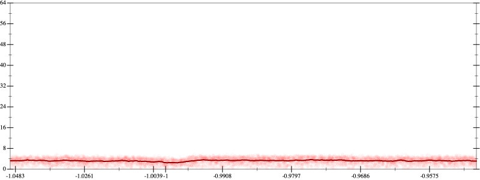
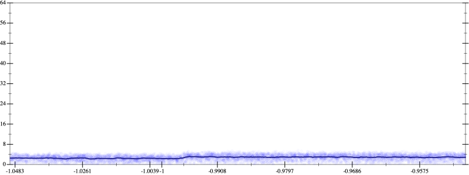
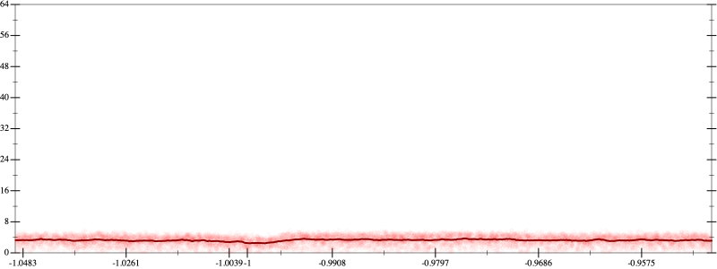
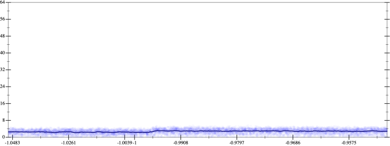

Initial program 3.3
\[\left(\left(\left(\left(\left(\left(-17297280.0 + 242161920.0 \cdot \left(x \cdot x\right)\right) + -484323840.0 \cdot \left(\left(\left(x \cdot x\right) \cdot x\right) \cdot x\right)\right) + 322882560.0 \cdot \left(\left(\left(\left(\left(x \cdot x\right) \cdot x\right) \cdot x\right) \cdot x\right) \cdot x\right)\right) + -92252160.0 \cdot \left(\left(\left(\left(\left(\left(\left(x \cdot x\right) \cdot x\right) \cdot x\right) \cdot x\right) \cdot x\right) \cdot x\right) \cdot x\right)\right) + 12300288.0 \cdot \left(\left(\left(\left(\left(\left(\left(\left(\left(x \cdot x\right) \cdot x\right) \cdot x\right) \cdot x\right) \cdot x\right) \cdot x\right) \cdot x\right) \cdot x\right) \cdot x\right)\right) + -745472.0 \cdot \left(\left(\left(\left(\left(\left(\left(\left(\left(\left(\left(x \cdot x\right) \cdot x\right) \cdot x\right) \cdot x\right) \cdot x\right) \cdot x\right) \cdot x\right) \cdot x\right) \cdot x\right) \cdot x\right) \cdot x\right)\right) + 16384.0 \cdot \left(\left(\left(\left(\left(\left(\left(\left(\left(\left(\left(\left(\left(x \cdot x\right) \cdot x\right) \cdot x\right) \cdot x\right) \cdot x\right) \cdot x\right) \cdot x\right) \cdot x\right) \cdot x\right) \cdot x\right) \cdot x\right) \cdot x\right) \cdot x\right)\]
- Using strategy
rm Applied add-cube-cbrt3.3
\[\leadsto \left(\left(\left(\color{blue}{\left(\sqrt[3]{\left(\left(-17297280.0 + 242161920.0 \cdot \left(x \cdot x\right)\right) + -484323840.0 \cdot \left(\left(\left(x \cdot x\right) \cdot x\right) \cdot x\right)\right) + 322882560.0 \cdot \left(\left(\left(\left(\left(x \cdot x\right) \cdot x\right) \cdot x\right) \cdot x\right) \cdot x\right)} \cdot \sqrt[3]{\left(\left(-17297280.0 + 242161920.0 \cdot \left(x \cdot x\right)\right) + -484323840.0 \cdot \left(\left(\left(x \cdot x\right) \cdot x\right) \cdot x\right)\right) + 322882560.0 \cdot \left(\left(\left(\left(\left(x \cdot x\right) \cdot x\right) \cdot x\right) \cdot x\right) \cdot x\right)}\right) \cdot \sqrt[3]{\left(\left(-17297280.0 + 242161920.0 \cdot \left(x \cdot x\right)\right) + -484323840.0 \cdot \left(\left(\left(x \cdot x\right) \cdot x\right) \cdot x\right)\right) + 322882560.0 \cdot \left(\left(\left(\left(\left(x \cdot x\right) \cdot x\right) \cdot x\right) \cdot x\right) \cdot x\right)}} + -92252160.0 \cdot \left(\left(\left(\left(\left(\left(\left(x \cdot x\right) \cdot x\right) \cdot x\right) \cdot x\right) \cdot x\right) \cdot x\right) \cdot x\right)\right) + 12300288.0 \cdot \left(\left(\left(\left(\left(\left(\left(\left(\left(x \cdot x\right) \cdot x\right) \cdot x\right) \cdot x\right) \cdot x\right) \cdot x\right) \cdot x\right) \cdot x\right) \cdot x\right)\right) + -745472.0 \cdot \left(\left(\left(\left(\left(\left(\left(\left(\left(\left(\left(x \cdot x\right) \cdot x\right) \cdot x\right) \cdot x\right) \cdot x\right) \cdot x\right) \cdot x\right) \cdot x\right) \cdot x\right) \cdot x\right) \cdot x\right)\right) + 16384.0 \cdot \left(\left(\left(\left(\left(\left(\left(\left(\left(\left(\left(\left(\left(x \cdot x\right) \cdot x\right) \cdot x\right) \cdot x\right) \cdot x\right) \cdot x\right) \cdot x\right) \cdot x\right) \cdot x\right) \cdot x\right) \cdot x\right) \cdot x\right) \cdot x\right)\]
Applied simplify2.7
\[\leadsto \left(\left(\left(\color{blue}{\left(\sqrt[3]{\left(\left(x \cdot x\right) \cdot 322882560.0 + -484323840.0\right) \cdot \left(\left(x \cdot x\right) \cdot \left(x \cdot x\right)\right) + \left(\left(x \cdot x\right) \cdot 242161920.0 + -17297280.0\right)} \cdot \sqrt[3]{\left(\left(x \cdot x\right) \cdot 322882560.0 + -484323840.0\right) \cdot \left(\left(x \cdot x\right) \cdot \left(x \cdot x\right)\right) + \left(\left(x \cdot x\right) \cdot 242161920.0 + -17297280.0\right)}\right)} \cdot \sqrt[3]{\left(\left(-17297280.0 + 242161920.0 \cdot \left(x \cdot x\right)\right) + -484323840.0 \cdot \left(\left(\left(x \cdot x\right) \cdot x\right) \cdot x\right)\right) + 322882560.0 \cdot \left(\left(\left(\left(\left(x \cdot x\right) \cdot x\right) \cdot x\right) \cdot x\right) \cdot x\right)} + -92252160.0 \cdot \left(\left(\left(\left(\left(\left(\left(x \cdot x\right) \cdot x\right) \cdot x\right) \cdot x\right) \cdot x\right) \cdot x\right) \cdot x\right)\right) + 12300288.0 \cdot \left(\left(\left(\left(\left(\left(\left(\left(\left(x \cdot x\right) \cdot x\right) \cdot x\right) \cdot x\right) \cdot x\right) \cdot x\right) \cdot x\right) \cdot x\right) \cdot x\right)\right) + -745472.0 \cdot \left(\left(\left(\left(\left(\left(\left(\left(\left(\left(\left(x \cdot x\right) \cdot x\right) \cdot x\right) \cdot x\right) \cdot x\right) \cdot x\right) \cdot x\right) \cdot x\right) \cdot x\right) \cdot x\right) \cdot x\right)\right) + 16384.0 \cdot \left(\left(\left(\left(\left(\left(\left(\left(\left(\left(\left(\left(\left(x \cdot x\right) \cdot x\right) \cdot x\right) \cdot x\right) \cdot x\right) \cdot x\right) \cdot x\right) \cdot x\right) \cdot x\right) \cdot x\right) \cdot x\right) \cdot x\right) \cdot x\right)\]
Applied simplify2.7
\[\leadsto \left(\left(\left(\left(\sqrt[3]{\left(\left(x \cdot x\right) \cdot 322882560.0 + -484323840.0\right) \cdot \left(\left(x \cdot x\right) \cdot \left(x \cdot x\right)\right) + \left(\left(x \cdot x\right) \cdot 242161920.0 + -17297280.0\right)} \cdot \sqrt[3]{\left(\left(x \cdot x\right) \cdot 322882560.0 + -484323840.0\right) \cdot \left(\left(x \cdot x\right) \cdot \left(x \cdot x\right)\right) + \left(\left(x \cdot x\right) \cdot 242161920.0 + -17297280.0\right)}\right) \cdot \color{blue}{\sqrt[3]{\left(-484323840.0 + \left(322882560.0 \cdot x\right) \cdot x\right) \cdot \left(\left(x \cdot x\right) \cdot \left(x \cdot x\right)\right) + \left(\left(x \cdot 242161920.0\right) \cdot x + -17297280.0\right)}} + -92252160.0 \cdot \left(\left(\left(\left(\left(\left(\left(x \cdot x\right) \cdot x\right) \cdot x\right) \cdot x\right) \cdot x\right) \cdot x\right) \cdot x\right)\right) + 12300288.0 \cdot \left(\left(\left(\left(\left(\left(\left(\left(\left(x \cdot x\right) \cdot x\right) \cdot x\right) \cdot x\right) \cdot x\right) \cdot x\right) \cdot x\right) \cdot x\right) \cdot x\right)\right) + -745472.0 \cdot \left(\left(\left(\left(\left(\left(\left(\left(\left(\left(\left(x \cdot x\right) \cdot x\right) \cdot x\right) \cdot x\right) \cdot x\right) \cdot x\right) \cdot x\right) \cdot x\right) \cdot x\right) \cdot x\right) \cdot x\right)\right) + 16384.0 \cdot \left(\left(\left(\left(\left(\left(\left(\left(\left(\left(\left(\left(\left(x \cdot x\right) \cdot x\right) \cdot x\right) \cdot x\right) \cdot x\right) \cdot x\right) \cdot x\right) \cdot x\right) \cdot x\right) \cdot x\right) \cdot x\right) \cdot x\right) \cdot x\right)\]
- Using strategy
rm Applied flip3-+2.7
\[\leadsto \left(\left(\left(\left(\sqrt[3]{\left(\left(x \cdot x\right) \cdot 322882560.0 + -484323840.0\right) \cdot \left(\left(x \cdot x\right) \cdot \left(x \cdot x\right)\right) + \left(\left(x \cdot x\right) \cdot 242161920.0 + -17297280.0\right)} \cdot \sqrt[3]{\left(\left(x \cdot x\right) \cdot 322882560.0 + -484323840.0\right) \cdot \left(\left(x \cdot x\right) \cdot \left(x \cdot x\right)\right) + \left(\left(x \cdot x\right) \cdot 242161920.0 + -17297280.0\right)}\right) \cdot \sqrt[3]{\left(-484323840.0 + \left(322882560.0 \cdot x\right) \cdot x\right) \cdot \left(\left(x \cdot x\right) \cdot \left(x \cdot x\right)\right) + \color{blue}{\frac{{\left(\left(x \cdot 242161920.0\right) \cdot x\right)}^{3} + {-17297280.0}^{3}}{\left(\left(x \cdot 242161920.0\right) \cdot x\right) \cdot \left(\left(x \cdot 242161920.0\right) \cdot x\right) + \left(-17297280.0 \cdot -17297280.0 - \left(\left(x \cdot 242161920.0\right) \cdot x\right) \cdot -17297280.0\right)}}} + -92252160.0 \cdot \left(\left(\left(\left(\left(\left(\left(x \cdot x\right) \cdot x\right) \cdot x\right) \cdot x\right) \cdot x\right) \cdot x\right) \cdot x\right)\right) + 12300288.0 \cdot \left(\left(\left(\left(\left(\left(\left(\left(\left(x \cdot x\right) \cdot x\right) \cdot x\right) \cdot x\right) \cdot x\right) \cdot x\right) \cdot x\right) \cdot x\right) \cdot x\right)\right) + -745472.0 \cdot \left(\left(\left(\left(\left(\left(\left(\left(\left(\left(\left(x \cdot x\right) \cdot x\right) \cdot x\right) \cdot x\right) \cdot x\right) \cdot x\right) \cdot x\right) \cdot x\right) \cdot x\right) \cdot x\right) \cdot x\right)\right) + 16384.0 \cdot \left(\left(\left(\left(\left(\left(\left(\left(\left(\left(\left(\left(\left(x \cdot x\right) \cdot x\right) \cdot x\right) \cdot x\right) \cdot x\right) \cdot x\right) \cdot x\right) \cdot x\right) \cdot x\right) \cdot x\right) \cdot x\right) \cdot x\right) \cdot x\right)\]
Applied flip3-+2.8
\[\leadsto \left(\left(\left(\left(\sqrt[3]{\left(\left(x \cdot x\right) \cdot 322882560.0 + -484323840.0\right) \cdot \left(\left(x \cdot x\right) \cdot \left(x \cdot x\right)\right) + \left(\left(x \cdot x\right) \cdot 242161920.0 + -17297280.0\right)} \cdot \sqrt[3]{\left(\left(x \cdot x\right) \cdot 322882560.0 + -484323840.0\right) \cdot \left(\left(x \cdot x\right) \cdot \left(x \cdot x\right)\right) + \left(\left(x \cdot x\right) \cdot 242161920.0 + -17297280.0\right)}\right) \cdot \sqrt[3]{\color{blue}{\frac{{-484323840.0}^{3} + {\left(\left(322882560.0 \cdot x\right) \cdot x\right)}^{3}}{-484323840.0 \cdot -484323840.0 + \left(\left(\left(322882560.0 \cdot x\right) \cdot x\right) \cdot \left(\left(322882560.0 \cdot x\right) \cdot x\right) - -484323840.0 \cdot \left(\left(322882560.0 \cdot x\right) \cdot x\right)\right)}} \cdot \left(\left(x \cdot x\right) \cdot \left(x \cdot x\right)\right) + \frac{{\left(\left(x \cdot 242161920.0\right) \cdot x\right)}^{3} + {-17297280.0}^{3}}{\left(\left(x \cdot 242161920.0\right) \cdot x\right) \cdot \left(\left(x \cdot 242161920.0\right) \cdot x\right) + \left(-17297280.0 \cdot -17297280.0 - \left(\left(x \cdot 242161920.0\right) \cdot x\right) \cdot -17297280.0\right)}} + -92252160.0 \cdot \left(\left(\left(\left(\left(\left(\left(x \cdot x\right) \cdot x\right) \cdot x\right) \cdot x\right) \cdot x\right) \cdot x\right) \cdot x\right)\right) + 12300288.0 \cdot \left(\left(\left(\left(\left(\left(\left(\left(\left(x \cdot x\right) \cdot x\right) \cdot x\right) \cdot x\right) \cdot x\right) \cdot x\right) \cdot x\right) \cdot x\right) \cdot x\right)\right) + -745472.0 \cdot \left(\left(\left(\left(\left(\left(\left(\left(\left(\left(\left(x \cdot x\right) \cdot x\right) \cdot x\right) \cdot x\right) \cdot x\right) \cdot x\right) \cdot x\right) \cdot x\right) \cdot x\right) \cdot x\right) \cdot x\right)\right) + 16384.0 \cdot \left(\left(\left(\left(\left(\left(\left(\left(\left(\left(\left(\left(\left(x \cdot x\right) \cdot x\right) \cdot x\right) \cdot x\right) \cdot x\right) \cdot x\right) \cdot x\right) \cdot x\right) \cdot x\right) \cdot x\right) \cdot x\right) \cdot x\right) \cdot x\right)\]
Applied associate-*l/2.7
\[\leadsto \left(\left(\left(\left(\sqrt[3]{\left(\left(x \cdot x\right) \cdot 322882560.0 + -484323840.0\right) \cdot \left(\left(x \cdot x\right) \cdot \left(x \cdot x\right)\right) + \left(\left(x \cdot x\right) \cdot 242161920.0 + -17297280.0\right)} \cdot \sqrt[3]{\left(\left(x \cdot x\right) \cdot 322882560.0 + -484323840.0\right) \cdot \left(\left(x \cdot x\right) \cdot \left(x \cdot x\right)\right) + \left(\left(x \cdot x\right) \cdot 242161920.0 + -17297280.0\right)}\right) \cdot \sqrt[3]{\color{blue}{\frac{\left({-484323840.0}^{3} + {\left(\left(322882560.0 \cdot x\right) \cdot x\right)}^{3}\right) \cdot \left(\left(x \cdot x\right) \cdot \left(x \cdot x\right)\right)}{-484323840.0 \cdot -484323840.0 + \left(\left(\left(322882560.0 \cdot x\right) \cdot x\right) \cdot \left(\left(322882560.0 \cdot x\right) \cdot x\right) - -484323840.0 \cdot \left(\left(322882560.0 \cdot x\right) \cdot x\right)\right)}} + \frac{{\left(\left(x \cdot 242161920.0\right) \cdot x\right)}^{3} + {-17297280.0}^{3}}{\left(\left(x \cdot 242161920.0\right) \cdot x\right) \cdot \left(\left(x \cdot 242161920.0\right) \cdot x\right) + \left(-17297280.0 \cdot -17297280.0 - \left(\left(x \cdot 242161920.0\right) \cdot x\right) \cdot -17297280.0\right)}} + -92252160.0 \cdot \left(\left(\left(\left(\left(\left(\left(x \cdot x\right) \cdot x\right) \cdot x\right) \cdot x\right) \cdot x\right) \cdot x\right) \cdot x\right)\right) + 12300288.0 \cdot \left(\left(\left(\left(\left(\left(\left(\left(\left(x \cdot x\right) \cdot x\right) \cdot x\right) \cdot x\right) \cdot x\right) \cdot x\right) \cdot x\right) \cdot x\right) \cdot x\right)\right) + -745472.0 \cdot \left(\left(\left(\left(\left(\left(\left(\left(\left(\left(\left(x \cdot x\right) \cdot x\right) \cdot x\right) \cdot x\right) \cdot x\right) \cdot x\right) \cdot x\right) \cdot x\right) \cdot x\right) \cdot x\right) \cdot x\right)\right) + 16384.0 \cdot \left(\left(\left(\left(\left(\left(\left(\left(\left(\left(\left(\left(\left(x \cdot x\right) \cdot x\right) \cdot x\right) \cdot x\right) \cdot x\right) \cdot x\right) \cdot x\right) \cdot x\right) \cdot x\right) \cdot x\right) \cdot x\right) \cdot x\right) \cdot x\right)\]
Applied frac-add2.7
\[\leadsto \left(\left(\left(\left(\sqrt[3]{\left(\left(x \cdot x\right) \cdot 322882560.0 + -484323840.0\right) \cdot \left(\left(x \cdot x\right) \cdot \left(x \cdot x\right)\right) + \left(\left(x \cdot x\right) \cdot 242161920.0 + -17297280.0\right)} \cdot \sqrt[3]{\left(\left(x \cdot x\right) \cdot 322882560.0 + -484323840.0\right) \cdot \left(\left(x \cdot x\right) \cdot \left(x \cdot x\right)\right) + \left(\left(x \cdot x\right) \cdot 242161920.0 + -17297280.0\right)}\right) \cdot \sqrt[3]{\color{blue}{\frac{\left(\left({-484323840.0}^{3} + {\left(\left(322882560.0 \cdot x\right) \cdot x\right)}^{3}\right) \cdot \left(\left(x \cdot x\right) \cdot \left(x \cdot x\right)\right)\right) \cdot \left(\left(\left(x \cdot 242161920.0\right) \cdot x\right) \cdot \left(\left(x \cdot 242161920.0\right) \cdot x\right) + \left(-17297280.0 \cdot -17297280.0 - \left(\left(x \cdot 242161920.0\right) \cdot x\right) \cdot -17297280.0\right)\right) + \left(-484323840.0 \cdot -484323840.0 + \left(\left(\left(322882560.0 \cdot x\right) \cdot x\right) \cdot \left(\left(322882560.0 \cdot x\right) \cdot x\right) - -484323840.0 \cdot \left(\left(322882560.0 \cdot x\right) \cdot x\right)\right)\right) \cdot \left({\left(\left(x \cdot 242161920.0\right) \cdot x\right)}^{3} + {-17297280.0}^{3}\right)}{\left(-484323840.0 \cdot -484323840.0 + \left(\left(\left(322882560.0 \cdot x\right) \cdot x\right) \cdot \left(\left(322882560.0 \cdot x\right) \cdot x\right) - -484323840.0 \cdot \left(\left(322882560.0 \cdot x\right) \cdot x\right)\right)\right) \cdot \left(\left(\left(x \cdot 242161920.0\right) \cdot x\right) \cdot \left(\left(x \cdot 242161920.0\right) \cdot x\right) + \left(-17297280.0 \cdot -17297280.0 - \left(\left(x \cdot 242161920.0\right) \cdot x\right) \cdot -17297280.0\right)\right)}}} + -92252160.0 \cdot \left(\left(\left(\left(\left(\left(\left(x \cdot x\right) \cdot x\right) \cdot x\right) \cdot x\right) \cdot x\right) \cdot x\right) \cdot x\right)\right) + 12300288.0 \cdot \left(\left(\left(\left(\left(\left(\left(\left(\left(x \cdot x\right) \cdot x\right) \cdot x\right) \cdot x\right) \cdot x\right) \cdot x\right) \cdot x\right) \cdot x\right) \cdot x\right)\right) + -745472.0 \cdot \left(\left(\left(\left(\left(\left(\left(\left(\left(\left(\left(x \cdot x\right) \cdot x\right) \cdot x\right) \cdot x\right) \cdot x\right) \cdot x\right) \cdot x\right) \cdot x\right) \cdot x\right) \cdot x\right) \cdot x\right)\right) + 16384.0 \cdot \left(\left(\left(\left(\left(\left(\left(\left(\left(\left(\left(\left(\left(x \cdot x\right) \cdot x\right) \cdot x\right) \cdot x\right) \cdot x\right) \cdot x\right) \cdot x\right) \cdot x\right) \cdot x\right) \cdot x\right) \cdot x\right) \cdot x\right) \cdot x\right)\]
- Using strategy
rm Applied flip-+2.7
\[\leadsto \left(\left(\color{blue}{\frac{\left(\left(\sqrt[3]{\left(\left(x \cdot x\right) \cdot 322882560.0 + -484323840.0\right) \cdot \left(\left(x \cdot x\right) \cdot \left(x \cdot x\right)\right) + \left(\left(x \cdot x\right) \cdot 242161920.0 + -17297280.0\right)} \cdot \sqrt[3]{\left(\left(x \cdot x\right) \cdot 322882560.0 + -484323840.0\right) \cdot \left(\left(x \cdot x\right) \cdot \left(x \cdot x\right)\right) + \left(\left(x \cdot x\right) \cdot 242161920.0 + -17297280.0\right)}\right) \cdot \sqrt[3]{\frac{\left(\left({-484323840.0}^{3} + {\left(\left(322882560.0 \cdot x\right) \cdot x\right)}^{3}\right) \cdot \left(\left(x \cdot x\right) \cdot \left(x \cdot x\right)\right)\right) \cdot \left(\left(\left(x \cdot 242161920.0\right) \cdot x\right) \cdot \left(\left(x \cdot 242161920.0\right) \cdot x\right) + \left(-17297280.0 \cdot -17297280.0 - \left(\left(x \cdot 242161920.0\right) \cdot x\right) \cdot -17297280.0\right)\right) + \left(-484323840.0 \cdot -484323840.0 + \left(\left(\left(322882560.0 \cdot x\right) \cdot x\right) \cdot \left(\left(322882560.0 \cdot x\right) \cdot x\right) - -484323840.0 \cdot \left(\left(322882560.0 \cdot x\right) \cdot x\right)\right)\right) \cdot \left({\left(\left(x \cdot 242161920.0\right) \cdot x\right)}^{3} + {-17297280.0}^{3}\right)}{\left(-484323840.0 \cdot -484323840.0 + \left(\left(\left(322882560.0 \cdot x\right) \cdot x\right) \cdot \left(\left(322882560.0 \cdot x\right) \cdot x\right) - -484323840.0 \cdot \left(\left(322882560.0 \cdot x\right) \cdot x\right)\right)\right) \cdot \left(\left(\left(x \cdot 242161920.0\right) \cdot x\right) \cdot \left(\left(x \cdot 242161920.0\right) \cdot x\right) + \left(-17297280.0 \cdot -17297280.0 - \left(\left(x \cdot 242161920.0\right) \cdot x\right) \cdot -17297280.0\right)\right)}}\right) \cdot \left(\left(\sqrt[3]{\left(\left(x \cdot x\right) \cdot 322882560.0 + -484323840.0\right) \cdot \left(\left(x \cdot x\right) \cdot \left(x \cdot x\right)\right) + \left(\left(x \cdot x\right) \cdot 242161920.0 + -17297280.0\right)} \cdot \sqrt[3]{\left(\left(x \cdot x\right) \cdot 322882560.0 + -484323840.0\right) \cdot \left(\left(x \cdot x\right) \cdot \left(x \cdot x\right)\right) + \left(\left(x \cdot x\right) \cdot 242161920.0 + -17297280.0\right)}\right) \cdot \sqrt[3]{\frac{\left(\left({-484323840.0}^{3} + {\left(\left(322882560.0 \cdot x\right) \cdot x\right)}^{3}\right) \cdot \left(\left(x \cdot x\right) \cdot \left(x \cdot x\right)\right)\right) \cdot \left(\left(\left(x \cdot 242161920.0\right) \cdot x\right) \cdot \left(\left(x \cdot 242161920.0\right) \cdot x\right) + \left(-17297280.0 \cdot -17297280.0 - \left(\left(x \cdot 242161920.0\right) \cdot x\right) \cdot -17297280.0\right)\right) + \left(-484323840.0 \cdot -484323840.0 + \left(\left(\left(322882560.0 \cdot x\right) \cdot x\right) \cdot \left(\left(322882560.0 \cdot x\right) \cdot x\right) - -484323840.0 \cdot \left(\left(322882560.0 \cdot x\right) \cdot x\right)\right)\right) \cdot \left({\left(\left(x \cdot 242161920.0\right) \cdot x\right)}^{3} + {-17297280.0}^{3}\right)}{\left(-484323840.0 \cdot -484323840.0 + \left(\left(\left(322882560.0 \cdot x\right) \cdot x\right) \cdot \left(\left(322882560.0 \cdot x\right) \cdot x\right) - -484323840.0 \cdot \left(\left(322882560.0 \cdot x\right) \cdot x\right)\right)\right) \cdot \left(\left(\left(x \cdot 242161920.0\right) \cdot x\right) \cdot \left(\left(x \cdot 242161920.0\right) \cdot x\right) + \left(-17297280.0 \cdot -17297280.0 - \left(\left(x \cdot 242161920.0\right) \cdot x\right) \cdot -17297280.0\right)\right)}}\right) - \left(-92252160.0 \cdot \left(\left(\left(\left(\left(\left(\left(x \cdot x\right) \cdot x\right) \cdot x\right) \cdot x\right) \cdot x\right) \cdot x\right) \cdot x\right)\right) \cdot \left(-92252160.0 \cdot \left(\left(\left(\left(\left(\left(\left(x \cdot x\right) \cdot x\right) \cdot x\right) \cdot x\right) \cdot x\right) \cdot x\right) \cdot x\right)\right)}{\left(\sqrt[3]{\left(\left(x \cdot x\right) \cdot 322882560.0 + -484323840.0\right) \cdot \left(\left(x \cdot x\right) \cdot \left(x \cdot x\right)\right) + \left(\left(x \cdot x\right) \cdot 242161920.0 + -17297280.0\right)} \cdot \sqrt[3]{\left(\left(x \cdot x\right) \cdot 322882560.0 + -484323840.0\right) \cdot \left(\left(x \cdot x\right) \cdot \left(x \cdot x\right)\right) + \left(\left(x \cdot x\right) \cdot 242161920.0 + -17297280.0\right)}\right) \cdot \sqrt[3]{\frac{\left(\left({-484323840.0}^{3} + {\left(\left(322882560.0 \cdot x\right) \cdot x\right)}^{3}\right) \cdot \left(\left(x \cdot x\right) \cdot \left(x \cdot x\right)\right)\right) \cdot \left(\left(\left(x \cdot 242161920.0\right) \cdot x\right) \cdot \left(\left(x \cdot 242161920.0\right) \cdot x\right) + \left(-17297280.0 \cdot -17297280.0 - \left(\left(x \cdot 242161920.0\right) \cdot x\right) \cdot -17297280.0\right)\right) + \left(-484323840.0 \cdot -484323840.0 + \left(\left(\left(322882560.0 \cdot x\right) \cdot x\right) \cdot \left(\left(322882560.0 \cdot x\right) \cdot x\right) - -484323840.0 \cdot \left(\left(322882560.0 \cdot x\right) \cdot x\right)\right)\right) \cdot \left({\left(\left(x \cdot 242161920.0\right) \cdot x\right)}^{3} + {-17297280.0}^{3}\right)}{\left(-484323840.0 \cdot -484323840.0 + \left(\left(\left(322882560.0 \cdot x\right) \cdot x\right) \cdot \left(\left(322882560.0 \cdot x\right) \cdot x\right) - -484323840.0 \cdot \left(\left(322882560.0 \cdot x\right) \cdot x\right)\right)\right) \cdot \left(\left(\left(x \cdot 242161920.0\right) \cdot x\right) \cdot \left(\left(x \cdot 242161920.0\right) \cdot x\right) + \left(-17297280.0 \cdot -17297280.0 - \left(\left(x \cdot 242161920.0\right) \cdot x\right) \cdot -17297280.0\right)\right)}} - -92252160.0 \cdot \left(\left(\left(\left(\left(\left(\left(x \cdot x\right) \cdot x\right) \cdot x\right) \cdot x\right) \cdot x\right) \cdot x\right) \cdot x\right)}} + 12300288.0 \cdot \left(\left(\left(\left(\left(\left(\left(\left(\left(x \cdot x\right) \cdot x\right) \cdot x\right) \cdot x\right) \cdot x\right) \cdot x\right) \cdot x\right) \cdot x\right) \cdot x\right)\right) + -745472.0 \cdot \left(\left(\left(\left(\left(\left(\left(\left(\left(\left(\left(x \cdot x\right) \cdot x\right) \cdot x\right) \cdot x\right) \cdot x\right) \cdot x\right) \cdot x\right) \cdot x\right) \cdot x\right) \cdot x\right) \cdot x\right)\right) + 16384.0 \cdot \left(\left(\left(\left(\left(\left(\left(\left(\left(\left(\left(\left(\left(x \cdot x\right) \cdot x\right) \cdot x\right) \cdot x\right) \cdot x\right) \cdot x\right) \cdot x\right) \cdot x\right) \cdot x\right) \cdot x\right) \cdot x\right) \cdot x\right) \cdot x\right)\]
- Using strategy
rm Applied flip3-+2.8
\[\leadsto \left(\left(\frac{\left(\left(\sqrt[3]{\left(\left(x \cdot x\right) \cdot 322882560.0 + -484323840.0\right) \cdot \left(\left(x \cdot x\right) \cdot \left(x \cdot x\right)\right) + \left(\left(x \cdot x\right) \cdot 242161920.0 + -17297280.0\right)} \cdot \sqrt[3]{\left(\left(x \cdot x\right) \cdot 322882560.0 + -484323840.0\right) \cdot \left(\left(x \cdot x\right) \cdot \left(x \cdot x\right)\right) + \left(\left(x \cdot x\right) \cdot 242161920.0 + -17297280.0\right)}\right) \cdot \sqrt[3]{\frac{\left(\left({-484323840.0}^{3} + {\left(\left(322882560.0 \cdot x\right) \cdot x\right)}^{3}\right) \cdot \left(\left(x \cdot x\right) \cdot \left(x \cdot x\right)\right)\right) \cdot \left(\left(\left(x \cdot 242161920.0\right) \cdot x\right) \cdot \left(\left(x \cdot 242161920.0\right) \cdot x\right) + \left(-17297280.0 \cdot -17297280.0 - \left(\left(x \cdot 242161920.0\right) \cdot x\right) \cdot -17297280.0\right)\right) + \left(-484323840.0 \cdot -484323840.0 + \left(\left(\left(322882560.0 \cdot x\right) \cdot x\right) \cdot \left(\left(322882560.0 \cdot x\right) \cdot x\right) - -484323840.0 \cdot \left(\left(322882560.0 \cdot x\right) \cdot x\right)\right)\right) \cdot \left({\left(\left(x \cdot 242161920.0\right) \cdot x\right)}^{3} + {-17297280.0}^{3}\right)}{\left(-484323840.0 \cdot -484323840.0 + \left(\left(\left(322882560.0 \cdot x\right) \cdot x\right) \cdot \left(\left(322882560.0 \cdot x\right) \cdot x\right) - -484323840.0 \cdot \left(\left(322882560.0 \cdot x\right) \cdot x\right)\right)\right) \cdot \left(\left(\left(x \cdot 242161920.0\right) \cdot x\right) \cdot \left(\left(x \cdot 242161920.0\right) \cdot x\right) + \left(-17297280.0 \cdot -17297280.0 - \left(\left(x \cdot 242161920.0\right) \cdot x\right) \cdot -17297280.0\right)\right)}}\right) \cdot \left(\left(\sqrt[3]{\left(\left(x \cdot x\right) \cdot 322882560.0 + -484323840.0\right) \cdot \left(\left(x \cdot x\right) \cdot \left(x \cdot x\right)\right) + \left(\left(x \cdot x\right) \cdot 242161920.0 + -17297280.0\right)} \cdot \sqrt[3]{\left(\left(x \cdot x\right) \cdot 322882560.0 + -484323840.0\right) \cdot \left(\left(x \cdot x\right) \cdot \left(x \cdot x\right)\right) + \left(\left(x \cdot x\right) \cdot 242161920.0 + -17297280.0\right)}\right) \cdot \sqrt[3]{\frac{\left(\left({-484323840.0}^{3} + {\left(\left(322882560.0 \cdot x\right) \cdot x\right)}^{3}\right) \cdot \left(\left(x \cdot x\right) \cdot \left(x \cdot x\right)\right)\right) \cdot \left(\left(\left(x \cdot 242161920.0\right) \cdot x\right) \cdot \left(\left(x \cdot 242161920.0\right) \cdot x\right) + \left(-17297280.0 \cdot -17297280.0 - \left(\left(x \cdot 242161920.0\right) \cdot x\right) \cdot -17297280.0\right)\right) + \left(-484323840.0 \cdot -484323840.0 + \left(\left(\left(322882560.0 \cdot x\right) \cdot x\right) \cdot \left(\left(322882560.0 \cdot x\right) \cdot x\right) - -484323840.0 \cdot \left(\left(322882560.0 \cdot x\right) \cdot x\right)\right)\right) \cdot \color{blue}{\frac{{\left({\left(\left(x \cdot 242161920.0\right) \cdot x\right)}^{3}\right)}^{3} + {\left({-17297280.0}^{3}\right)}^{3}}{{\left(\left(x \cdot 242161920.0\right) \cdot x\right)}^{3} \cdot {\left(\left(x \cdot 242161920.0\right) \cdot x\right)}^{3} + \left({-17297280.0}^{3} \cdot {-17297280.0}^{3} - {\left(\left(x \cdot 242161920.0\right) \cdot x\right)}^{3} \cdot {-17297280.0}^{3}\right)}}}{\left(-484323840.0 \cdot -484323840.0 + \left(\left(\left(322882560.0 \cdot x\right) \cdot x\right) \cdot \left(\left(322882560.0 \cdot x\right) \cdot x\right) - -484323840.0 \cdot \left(\left(322882560.0 \cdot x\right) \cdot x\right)\right)\right) \cdot \left(\left(\left(x \cdot 242161920.0\right) \cdot x\right) \cdot \left(\left(x \cdot 242161920.0\right) \cdot x\right) + \left(-17297280.0 \cdot -17297280.0 - \left(\left(x \cdot 242161920.0\right) \cdot x\right) \cdot -17297280.0\right)\right)}}\right) - \left(-92252160.0 \cdot \left(\left(\left(\left(\left(\left(\left(x \cdot x\right) \cdot x\right) \cdot x\right) \cdot x\right) \cdot x\right) \cdot x\right) \cdot x\right)\right) \cdot \left(-92252160.0 \cdot \left(\left(\left(\left(\left(\left(\left(x \cdot x\right) \cdot x\right) \cdot x\right) \cdot x\right) \cdot x\right) \cdot x\right) \cdot x\right)\right)}{\left(\sqrt[3]{\left(\left(x \cdot x\right) \cdot 322882560.0 + -484323840.0\right) \cdot \left(\left(x \cdot x\right) \cdot \left(x \cdot x\right)\right) + \left(\left(x \cdot x\right) \cdot 242161920.0 + -17297280.0\right)} \cdot \sqrt[3]{\left(\left(x \cdot x\right) \cdot 322882560.0 + -484323840.0\right) \cdot \left(\left(x \cdot x\right) \cdot \left(x \cdot x\right)\right) + \left(\left(x \cdot x\right) \cdot 242161920.0 + -17297280.0\right)}\right) \cdot \sqrt[3]{\frac{\left(\left({-484323840.0}^{3} + {\left(\left(322882560.0 \cdot x\right) \cdot x\right)}^{3}\right) \cdot \left(\left(x \cdot x\right) \cdot \left(x \cdot x\right)\right)\right) \cdot \left(\left(\left(x \cdot 242161920.0\right) \cdot x\right) \cdot \left(\left(x \cdot 242161920.0\right) \cdot x\right) + \left(-17297280.0 \cdot -17297280.0 - \left(\left(x \cdot 242161920.0\right) \cdot x\right) \cdot -17297280.0\right)\right) + \left(-484323840.0 \cdot -484323840.0 + \left(\left(\left(322882560.0 \cdot x\right) \cdot x\right) \cdot \left(\left(322882560.0 \cdot x\right) \cdot x\right) - -484323840.0 \cdot \left(\left(322882560.0 \cdot x\right) \cdot x\right)\right)\right) \cdot \left({\left(\left(x \cdot 242161920.0\right) \cdot x\right)}^{3} + {-17297280.0}^{3}\right)}{\left(-484323840.0 \cdot -484323840.0 + \left(\left(\left(322882560.0 \cdot x\right) \cdot x\right) \cdot \left(\left(322882560.0 \cdot x\right) \cdot x\right) - -484323840.0 \cdot \left(\left(322882560.0 \cdot x\right) \cdot x\right)\right)\right) \cdot \left(\left(\left(x \cdot 242161920.0\right) \cdot x\right) \cdot \left(\left(x \cdot 242161920.0\right) \cdot x\right) + \left(-17297280.0 \cdot -17297280.0 - \left(\left(x \cdot 242161920.0\right) \cdot x\right) \cdot -17297280.0\right)\right)}} - -92252160.0 \cdot \left(\left(\left(\left(\left(\left(\left(x \cdot x\right) \cdot x\right) \cdot x\right) \cdot x\right) \cdot x\right) \cdot x\right) \cdot x\right)} + 12300288.0 \cdot \left(\left(\left(\left(\left(\left(\left(\left(\left(x \cdot x\right) \cdot x\right) \cdot x\right) \cdot x\right) \cdot x\right) \cdot x\right) \cdot x\right) \cdot x\right) \cdot x\right)\right) + -745472.0 \cdot \left(\left(\left(\left(\left(\left(\left(\left(\left(\left(\left(x \cdot x\right) \cdot x\right) \cdot x\right) \cdot x\right) \cdot x\right) \cdot x\right) \cdot x\right) \cdot x\right) \cdot x\right) \cdot x\right) \cdot x\right)\right) + 16384.0 \cdot \left(\left(\left(\left(\left(\left(\left(\left(\left(\left(\left(\left(\left(x \cdot x\right) \cdot x\right) \cdot x\right) \cdot x\right) \cdot x\right) \cdot x\right) \cdot x\right) \cdot x\right) \cdot x\right) \cdot x\right) \cdot x\right) \cdot x\right) \cdot x\right)\]
Applied associate-*r/2.8
\[\leadsto \left(\left(\frac{\left(\left(\sqrt[3]{\left(\left(x \cdot x\right) \cdot 322882560.0 + -484323840.0\right) \cdot \left(\left(x \cdot x\right) \cdot \left(x \cdot x\right)\right) + \left(\left(x \cdot x\right) \cdot 242161920.0 + -17297280.0\right)} \cdot \sqrt[3]{\left(\left(x \cdot x\right) \cdot 322882560.0 + -484323840.0\right) \cdot \left(\left(x \cdot x\right) \cdot \left(x \cdot x\right)\right) + \left(\left(x \cdot x\right) \cdot 242161920.0 + -17297280.0\right)}\right) \cdot \sqrt[3]{\frac{\left(\left({-484323840.0}^{3} + {\left(\left(322882560.0 \cdot x\right) \cdot x\right)}^{3}\right) \cdot \left(\left(x \cdot x\right) \cdot \left(x \cdot x\right)\right)\right) \cdot \left(\left(\left(x \cdot 242161920.0\right) \cdot x\right) \cdot \left(\left(x \cdot 242161920.0\right) \cdot x\right) + \left(-17297280.0 \cdot -17297280.0 - \left(\left(x \cdot 242161920.0\right) \cdot x\right) \cdot -17297280.0\right)\right) + \left(-484323840.0 \cdot -484323840.0 + \left(\left(\left(322882560.0 \cdot x\right) \cdot x\right) \cdot \left(\left(322882560.0 \cdot x\right) \cdot x\right) - -484323840.0 \cdot \left(\left(322882560.0 \cdot x\right) \cdot x\right)\right)\right) \cdot \left({\left(\left(x \cdot 242161920.0\right) \cdot x\right)}^{3} + {-17297280.0}^{3}\right)}{\left(-484323840.0 \cdot -484323840.0 + \left(\left(\left(322882560.0 \cdot x\right) \cdot x\right) \cdot \left(\left(322882560.0 \cdot x\right) \cdot x\right) - -484323840.0 \cdot \left(\left(322882560.0 \cdot x\right) \cdot x\right)\right)\right) \cdot \left(\left(\left(x \cdot 242161920.0\right) \cdot x\right) \cdot \left(\left(x \cdot 242161920.0\right) \cdot x\right) + \left(-17297280.0 \cdot -17297280.0 - \left(\left(x \cdot 242161920.0\right) \cdot x\right) \cdot -17297280.0\right)\right)}}\right) \cdot \left(\left(\sqrt[3]{\left(\left(x \cdot x\right) \cdot 322882560.0 + -484323840.0\right) \cdot \left(\left(x \cdot x\right) \cdot \left(x \cdot x\right)\right) + \left(\left(x \cdot x\right) \cdot 242161920.0 + -17297280.0\right)} \cdot \sqrt[3]{\left(\left(x \cdot x\right) \cdot 322882560.0 + -484323840.0\right) \cdot \left(\left(x \cdot x\right) \cdot \left(x \cdot x\right)\right) + \left(\left(x \cdot x\right) \cdot 242161920.0 + -17297280.0\right)}\right) \cdot \sqrt[3]{\frac{\left(\left({-484323840.0}^{3} + {\left(\left(322882560.0 \cdot x\right) \cdot x\right)}^{3}\right) \cdot \left(\left(x \cdot x\right) \cdot \left(x \cdot x\right)\right)\right) \cdot \left(\left(\left(x \cdot 242161920.0\right) \cdot x\right) \cdot \left(\left(x \cdot 242161920.0\right) \cdot x\right) + \left(-17297280.0 \cdot -17297280.0 - \left(\left(x \cdot 242161920.0\right) \cdot x\right) \cdot -17297280.0\right)\right) + \color{blue}{\frac{\left(-484323840.0 \cdot -484323840.0 + \left(\left(\left(322882560.0 \cdot x\right) \cdot x\right) \cdot \left(\left(322882560.0 \cdot x\right) \cdot x\right) - -484323840.0 \cdot \left(\left(322882560.0 \cdot x\right) \cdot x\right)\right)\right) \cdot \left({\left({\left(\left(x \cdot 242161920.0\right) \cdot x\right)}^{3}\right)}^{3} + {\left({-17297280.0}^{3}\right)}^{3}\right)}{{\left(\left(x \cdot 242161920.0\right) \cdot x\right)}^{3} \cdot {\left(\left(x \cdot 242161920.0\right) \cdot x\right)}^{3} + \left({-17297280.0}^{3} \cdot {-17297280.0}^{3} - {\left(\left(x \cdot 242161920.0\right) \cdot x\right)}^{3} \cdot {-17297280.0}^{3}\right)}}}{\left(-484323840.0 \cdot -484323840.0 + \left(\left(\left(322882560.0 \cdot x\right) \cdot x\right) \cdot \left(\left(322882560.0 \cdot x\right) \cdot x\right) - -484323840.0 \cdot \left(\left(322882560.0 \cdot x\right) \cdot x\right)\right)\right) \cdot \left(\left(\left(x \cdot 242161920.0\right) \cdot x\right) \cdot \left(\left(x \cdot 242161920.0\right) \cdot x\right) + \left(-17297280.0 \cdot -17297280.0 - \left(\left(x \cdot 242161920.0\right) \cdot x\right) \cdot -17297280.0\right)\right)}}\right) - \left(-92252160.0 \cdot \left(\left(\left(\left(\left(\left(\left(x \cdot x\right) \cdot x\right) \cdot x\right) \cdot x\right) \cdot x\right) \cdot x\right) \cdot x\right)\right) \cdot \left(-92252160.0 \cdot \left(\left(\left(\left(\left(\left(\left(x \cdot x\right) \cdot x\right) \cdot x\right) \cdot x\right) \cdot x\right) \cdot x\right) \cdot x\right)\right)}{\left(\sqrt[3]{\left(\left(x \cdot x\right) \cdot 322882560.0 + -484323840.0\right) \cdot \left(\left(x \cdot x\right) \cdot \left(x \cdot x\right)\right) + \left(\left(x \cdot x\right) \cdot 242161920.0 + -17297280.0\right)} \cdot \sqrt[3]{\left(\left(x \cdot x\right) \cdot 322882560.0 + -484323840.0\right) \cdot \left(\left(x \cdot x\right) \cdot \left(x \cdot x\right)\right) + \left(\left(x \cdot x\right) \cdot 242161920.0 + -17297280.0\right)}\right) \cdot \sqrt[3]{\frac{\left(\left({-484323840.0}^{3} + {\left(\left(322882560.0 \cdot x\right) \cdot x\right)}^{3}\right) \cdot \left(\left(x \cdot x\right) \cdot \left(x \cdot x\right)\right)\right) \cdot \left(\left(\left(x \cdot 242161920.0\right) \cdot x\right) \cdot \left(\left(x \cdot 242161920.0\right) \cdot x\right) + \left(-17297280.0 \cdot -17297280.0 - \left(\left(x \cdot 242161920.0\right) \cdot x\right) \cdot -17297280.0\right)\right) + \left(-484323840.0 \cdot -484323840.0 + \left(\left(\left(322882560.0 \cdot x\right) \cdot x\right) \cdot \left(\left(322882560.0 \cdot x\right) \cdot x\right) - -484323840.0 \cdot \left(\left(322882560.0 \cdot x\right) \cdot x\right)\right)\right) \cdot \left({\left(\left(x \cdot 242161920.0\right) \cdot x\right)}^{3} + {-17297280.0}^{3}\right)}{\left(-484323840.0 \cdot -484323840.0 + \left(\left(\left(322882560.0 \cdot x\right) \cdot x\right) \cdot \left(\left(322882560.0 \cdot x\right) \cdot x\right) - -484323840.0 \cdot \left(\left(322882560.0 \cdot x\right) \cdot x\right)\right)\right) \cdot \left(\left(\left(x \cdot 242161920.0\right) \cdot x\right) \cdot \left(\left(x \cdot 242161920.0\right) \cdot x\right) + \left(-17297280.0 \cdot -17297280.0 - \left(\left(x \cdot 242161920.0\right) \cdot x\right) \cdot -17297280.0\right)\right)}} - -92252160.0 \cdot \left(\left(\left(\left(\left(\left(\left(x \cdot x\right) \cdot x\right) \cdot x\right) \cdot x\right) \cdot x\right) \cdot x\right) \cdot x\right)} + 12300288.0 \cdot \left(\left(\left(\left(\left(\left(\left(\left(\left(x \cdot x\right) \cdot x\right) \cdot x\right) \cdot x\right) \cdot x\right) \cdot x\right) \cdot x\right) \cdot x\right) \cdot x\right)\right) + -745472.0 \cdot \left(\left(\left(\left(\left(\left(\left(\left(\left(\left(\left(x \cdot x\right) \cdot x\right) \cdot x\right) \cdot x\right) \cdot x\right) \cdot x\right) \cdot x\right) \cdot x\right) \cdot x\right) \cdot x\right) \cdot x\right)\right) + 16384.0 \cdot \left(\left(\left(\left(\left(\left(\left(\left(\left(\left(\left(\left(\left(x \cdot x\right) \cdot x\right) \cdot x\right) \cdot x\right) \cdot x\right) \cdot x\right) \cdot x\right) \cdot x\right) \cdot x\right) \cdot x\right) \cdot x\right) \cdot x\right) \cdot x\right)\]
Applied flip-+2.8
\[\leadsto \left(\left(\frac{\left(\left(\sqrt[3]{\left(\left(x \cdot x\right) \cdot 322882560.0 + -484323840.0\right) \cdot \left(\left(x \cdot x\right) \cdot \left(x \cdot x\right)\right) + \left(\left(x \cdot x\right) \cdot 242161920.0 + -17297280.0\right)} \cdot \sqrt[3]{\left(\left(x \cdot x\right) \cdot 322882560.0 + -484323840.0\right) \cdot \left(\left(x \cdot x\right) \cdot \left(x \cdot x\right)\right) + \left(\left(x \cdot x\right) \cdot 242161920.0 + -17297280.0\right)}\right) \cdot \sqrt[3]{\frac{\left(\left({-484323840.0}^{3} + {\left(\left(322882560.0 \cdot x\right) \cdot x\right)}^{3}\right) \cdot \left(\left(x \cdot x\right) \cdot \left(x \cdot x\right)\right)\right) \cdot \left(\left(\left(x \cdot 242161920.0\right) \cdot x\right) \cdot \left(\left(x \cdot 242161920.0\right) \cdot x\right) + \left(-17297280.0 \cdot -17297280.0 - \left(\left(x \cdot 242161920.0\right) \cdot x\right) \cdot -17297280.0\right)\right) + \left(-484323840.0 \cdot -484323840.0 + \left(\left(\left(322882560.0 \cdot x\right) \cdot x\right) \cdot \left(\left(322882560.0 \cdot x\right) \cdot x\right) - -484323840.0 \cdot \left(\left(322882560.0 \cdot x\right) \cdot x\right)\right)\right) \cdot \left({\left(\left(x \cdot 242161920.0\right) \cdot x\right)}^{3} + {-17297280.0}^{3}\right)}{\left(-484323840.0 \cdot -484323840.0 + \left(\left(\left(322882560.0 \cdot x\right) \cdot x\right) \cdot \left(\left(322882560.0 \cdot x\right) \cdot x\right) - -484323840.0 \cdot \left(\left(322882560.0 \cdot x\right) \cdot x\right)\right)\right) \cdot \left(\left(\left(x \cdot 242161920.0\right) \cdot x\right) \cdot \left(\left(x \cdot 242161920.0\right) \cdot x\right) + \left(-17297280.0 \cdot -17297280.0 - \left(\left(x \cdot 242161920.0\right) \cdot x\right) \cdot -17297280.0\right)\right)}}\right) \cdot \left(\left(\sqrt[3]{\left(\left(x \cdot x\right) \cdot 322882560.0 + -484323840.0\right) \cdot \left(\left(x \cdot x\right) \cdot \left(x \cdot x\right)\right) + \left(\left(x \cdot x\right) \cdot 242161920.0 + -17297280.0\right)} \cdot \sqrt[3]{\left(\left(x \cdot x\right) \cdot 322882560.0 + -484323840.0\right) \cdot \left(\left(x \cdot x\right) \cdot \left(x \cdot x\right)\right) + \left(\left(x \cdot x\right) \cdot 242161920.0 + -17297280.0\right)}\right) \cdot \sqrt[3]{\frac{\left(\left({-484323840.0}^{3} + {\left(\left(322882560.0 \cdot x\right) \cdot x\right)}^{3}\right) \cdot \left(\left(x \cdot x\right) \cdot \left(x \cdot x\right)\right)\right) \cdot \color{blue}{\frac{\left(\left(\left(x \cdot 242161920.0\right) \cdot x\right) \cdot \left(\left(x \cdot 242161920.0\right) \cdot x\right)\right) \cdot \left(\left(\left(x \cdot 242161920.0\right) \cdot x\right) \cdot \left(\left(x \cdot 242161920.0\right) \cdot x\right)\right) - \left(-17297280.0 \cdot -17297280.0 - \left(\left(x \cdot 242161920.0\right) \cdot x\right) \cdot -17297280.0\right) \cdot \left(-17297280.0 \cdot -17297280.0 - \left(\left(x \cdot 242161920.0\right) \cdot x\right) \cdot -17297280.0\right)}{\left(\left(x \cdot 242161920.0\right) \cdot x\right) \cdot \left(\left(x \cdot 242161920.0\right) \cdot x\right) - \left(-17297280.0 \cdot -17297280.0 - \left(\left(x \cdot 242161920.0\right) \cdot x\right) \cdot -17297280.0\right)}} + \frac{\left(-484323840.0 \cdot -484323840.0 + \left(\left(\left(322882560.0 \cdot x\right) \cdot x\right) \cdot \left(\left(322882560.0 \cdot x\right) \cdot x\right) - -484323840.0 \cdot \left(\left(322882560.0 \cdot x\right) \cdot x\right)\right)\right) \cdot \left({\left({\left(\left(x \cdot 242161920.0\right) \cdot x\right)}^{3}\right)}^{3} + {\left({-17297280.0}^{3}\right)}^{3}\right)}{{\left(\left(x \cdot 242161920.0\right) \cdot x\right)}^{3} \cdot {\left(\left(x \cdot 242161920.0\right) \cdot x\right)}^{3} + \left({-17297280.0}^{3} \cdot {-17297280.0}^{3} - {\left(\left(x \cdot 242161920.0\right) \cdot x\right)}^{3} \cdot {-17297280.0}^{3}\right)}}{\left(-484323840.0 \cdot -484323840.0 + \left(\left(\left(322882560.0 \cdot x\right) \cdot x\right) \cdot \left(\left(322882560.0 \cdot x\right) \cdot x\right) - -484323840.0 \cdot \left(\left(322882560.0 \cdot x\right) \cdot x\right)\right)\right) \cdot \left(\left(\left(x \cdot 242161920.0\right) \cdot x\right) \cdot \left(\left(x \cdot 242161920.0\right) \cdot x\right) + \left(-17297280.0 \cdot -17297280.0 - \left(\left(x \cdot 242161920.0\right) \cdot x\right) \cdot -17297280.0\right)\right)}}\right) - \left(-92252160.0 \cdot \left(\left(\left(\left(\left(\left(\left(x \cdot x\right) \cdot x\right) \cdot x\right) \cdot x\right) \cdot x\right) \cdot x\right) \cdot x\right)\right) \cdot \left(-92252160.0 \cdot \left(\left(\left(\left(\left(\left(\left(x \cdot x\right) \cdot x\right) \cdot x\right) \cdot x\right) \cdot x\right) \cdot x\right) \cdot x\right)\right)}{\left(\sqrt[3]{\left(\left(x \cdot x\right) \cdot 322882560.0 + -484323840.0\right) \cdot \left(\left(x \cdot x\right) \cdot \left(x \cdot x\right)\right) + \left(\left(x \cdot x\right) \cdot 242161920.0 + -17297280.0\right)} \cdot \sqrt[3]{\left(\left(x \cdot x\right) \cdot 322882560.0 + -484323840.0\right) \cdot \left(\left(x \cdot x\right) \cdot \left(x \cdot x\right)\right) + \left(\left(x \cdot x\right) \cdot 242161920.0 + -17297280.0\right)}\right) \cdot \sqrt[3]{\frac{\left(\left({-484323840.0}^{3} + {\left(\left(322882560.0 \cdot x\right) \cdot x\right)}^{3}\right) \cdot \left(\left(x \cdot x\right) \cdot \left(x \cdot x\right)\right)\right) \cdot \left(\left(\left(x \cdot 242161920.0\right) \cdot x\right) \cdot \left(\left(x \cdot 242161920.0\right) \cdot x\right) + \left(-17297280.0 \cdot -17297280.0 - \left(\left(x \cdot 242161920.0\right) \cdot x\right) \cdot -17297280.0\right)\right) + \left(-484323840.0 \cdot -484323840.0 + \left(\left(\left(322882560.0 \cdot x\right) \cdot x\right) \cdot \left(\left(322882560.0 \cdot x\right) \cdot x\right) - -484323840.0 \cdot \left(\left(322882560.0 \cdot x\right) \cdot x\right)\right)\right) \cdot \left({\left(\left(x \cdot 242161920.0\right) \cdot x\right)}^{3} + {-17297280.0}^{3}\right)}{\left(-484323840.0 \cdot -484323840.0 + \left(\left(\left(322882560.0 \cdot x\right) \cdot x\right) \cdot \left(\left(322882560.0 \cdot x\right) \cdot x\right) - -484323840.0 \cdot \left(\left(322882560.0 \cdot x\right) \cdot x\right)\right)\right) \cdot \left(\left(\left(x \cdot 242161920.0\right) \cdot x\right) \cdot \left(\left(x \cdot 242161920.0\right) \cdot x\right) + \left(-17297280.0 \cdot -17297280.0 - \left(\left(x \cdot 242161920.0\right) \cdot x\right) \cdot -17297280.0\right)\right)}} - -92252160.0 \cdot \left(\left(\left(\left(\left(\left(\left(x \cdot x\right) \cdot x\right) \cdot x\right) \cdot x\right) \cdot x\right) \cdot x\right) \cdot x\right)} + 12300288.0 \cdot \left(\left(\left(\left(\left(\left(\left(\left(\left(x \cdot x\right) \cdot x\right) \cdot x\right) \cdot x\right) \cdot x\right) \cdot x\right) \cdot x\right) \cdot x\right) \cdot x\right)\right) + -745472.0 \cdot \left(\left(\left(\left(\left(\left(\left(\left(\left(\left(\left(x \cdot x\right) \cdot x\right) \cdot x\right) \cdot x\right) \cdot x\right) \cdot x\right) \cdot x\right) \cdot x\right) \cdot x\right) \cdot x\right) \cdot x\right)\right) + 16384.0 \cdot \left(\left(\left(\left(\left(\left(\left(\left(\left(\left(\left(\left(\left(x \cdot x\right) \cdot x\right) \cdot x\right) \cdot x\right) \cdot x\right) \cdot x\right) \cdot x\right) \cdot x\right) \cdot x\right) \cdot x\right) \cdot x\right) \cdot x\right) \cdot x\right)\]
Applied flip3-+2.8
\[\leadsto \left(\left(\frac{\left(\left(\sqrt[3]{\left(\left(x \cdot x\right) \cdot 322882560.0 + -484323840.0\right) \cdot \left(\left(x \cdot x\right) \cdot \left(x \cdot x\right)\right) + \left(\left(x \cdot x\right) \cdot 242161920.0 + -17297280.0\right)} \cdot \sqrt[3]{\left(\left(x \cdot x\right) \cdot 322882560.0 + -484323840.0\right) \cdot \left(\left(x \cdot x\right) \cdot \left(x \cdot x\right)\right) + \left(\left(x \cdot x\right) \cdot 242161920.0 + -17297280.0\right)}\right) \cdot \sqrt[3]{\frac{\left(\left({-484323840.0}^{3} + {\left(\left(322882560.0 \cdot x\right) \cdot x\right)}^{3}\right) \cdot \left(\left(x \cdot x\right) \cdot \left(x \cdot x\right)\right)\right) \cdot \left(\left(\left(x \cdot 242161920.0\right) \cdot x\right) \cdot \left(\left(x \cdot 242161920.0\right) \cdot x\right) + \left(-17297280.0 \cdot -17297280.0 - \left(\left(x \cdot 242161920.0\right) \cdot x\right) \cdot -17297280.0\right)\right) + \left(-484323840.0 \cdot -484323840.0 + \left(\left(\left(322882560.0 \cdot x\right) \cdot x\right) \cdot \left(\left(322882560.0 \cdot x\right) \cdot x\right) - -484323840.0 \cdot \left(\left(322882560.0 \cdot x\right) \cdot x\right)\right)\right) \cdot \left({\left(\left(x \cdot 242161920.0\right) \cdot x\right)}^{3} + {-17297280.0}^{3}\right)}{\left(-484323840.0 \cdot -484323840.0 + \left(\left(\left(322882560.0 \cdot x\right) \cdot x\right) \cdot \left(\left(322882560.0 \cdot x\right) \cdot x\right) - -484323840.0 \cdot \left(\left(322882560.0 \cdot x\right) \cdot x\right)\right)\right) \cdot \left(\left(\left(x \cdot 242161920.0\right) \cdot x\right) \cdot \left(\left(x \cdot 242161920.0\right) \cdot x\right) + \left(-17297280.0 \cdot -17297280.0 - \left(\left(x \cdot 242161920.0\right) \cdot x\right) \cdot -17297280.0\right)\right)}}\right) \cdot \left(\left(\sqrt[3]{\left(\left(x \cdot x\right) \cdot 322882560.0 + -484323840.0\right) \cdot \left(\left(x \cdot x\right) \cdot \left(x \cdot x\right)\right) + \left(\left(x \cdot x\right) \cdot 242161920.0 + -17297280.0\right)} \cdot \sqrt[3]{\left(\left(x \cdot x\right) \cdot 322882560.0 + -484323840.0\right) \cdot \left(\left(x \cdot x\right) \cdot \left(x \cdot x\right)\right) + \left(\left(x \cdot x\right) \cdot 242161920.0 + -17297280.0\right)}\right) \cdot \sqrt[3]{\frac{\left(\color{blue}{\frac{{\left({-484323840.0}^{3}\right)}^{3} + {\left({\left(\left(322882560.0 \cdot x\right) \cdot x\right)}^{3}\right)}^{3}}{{-484323840.0}^{3} \cdot {-484323840.0}^{3} + \left({\left(\left(322882560.0 \cdot x\right) \cdot x\right)}^{3} \cdot {\left(\left(322882560.0 \cdot x\right) \cdot x\right)}^{3} - {-484323840.0}^{3} \cdot {\left(\left(322882560.0 \cdot x\right) \cdot x\right)}^{3}\right)}} \cdot \left(\left(x \cdot x\right) \cdot \left(x \cdot x\right)\right)\right) \cdot \frac{\left(\left(\left(x \cdot 242161920.0\right) \cdot x\right) \cdot \left(\left(x \cdot 242161920.0\right) \cdot x\right)\right) \cdot \left(\left(\left(x \cdot 242161920.0\right) \cdot x\right) \cdot \left(\left(x \cdot 242161920.0\right) \cdot x\right)\right) - \left(-17297280.0 \cdot -17297280.0 - \left(\left(x \cdot 242161920.0\right) \cdot x\right) \cdot -17297280.0\right) \cdot \left(-17297280.0 \cdot -17297280.0 - \left(\left(x \cdot 242161920.0\right) \cdot x\right) \cdot -17297280.0\right)}{\left(\left(x \cdot 242161920.0\right) \cdot x\right) \cdot \left(\left(x \cdot 242161920.0\right) \cdot x\right) - \left(-17297280.0 \cdot -17297280.0 - \left(\left(x \cdot 242161920.0\right) \cdot x\right) \cdot -17297280.0\right)} + \frac{\left(-484323840.0 \cdot -484323840.0 + \left(\left(\left(322882560.0 \cdot x\right) \cdot x\right) \cdot \left(\left(322882560.0 \cdot x\right) \cdot x\right) - -484323840.0 \cdot \left(\left(322882560.0 \cdot x\right) \cdot x\right)\right)\right) \cdot \left({\left({\left(\left(x \cdot 242161920.0\right) \cdot x\right)}^{3}\right)}^{3} + {\left({-17297280.0}^{3}\right)}^{3}\right)}{{\left(\left(x \cdot 242161920.0\right) \cdot x\right)}^{3} \cdot {\left(\left(x \cdot 242161920.0\right) \cdot x\right)}^{3} + \left({-17297280.0}^{3} \cdot {-17297280.0}^{3} - {\left(\left(x \cdot 242161920.0\right) \cdot x\right)}^{3} \cdot {-17297280.0}^{3}\right)}}{\left(-484323840.0 \cdot -484323840.0 + \left(\left(\left(322882560.0 \cdot x\right) \cdot x\right) \cdot \left(\left(322882560.0 \cdot x\right) \cdot x\right) - -484323840.0 \cdot \left(\left(322882560.0 \cdot x\right) \cdot x\right)\right)\right) \cdot \left(\left(\left(x \cdot 242161920.0\right) \cdot x\right) \cdot \left(\left(x \cdot 242161920.0\right) \cdot x\right) + \left(-17297280.0 \cdot -17297280.0 - \left(\left(x \cdot 242161920.0\right) \cdot x\right) \cdot -17297280.0\right)\right)}}\right) - \left(-92252160.0 \cdot \left(\left(\left(\left(\left(\left(\left(x \cdot x\right) \cdot x\right) \cdot x\right) \cdot x\right) \cdot x\right) \cdot x\right) \cdot x\right)\right) \cdot \left(-92252160.0 \cdot \left(\left(\left(\left(\left(\left(\left(x \cdot x\right) \cdot x\right) \cdot x\right) \cdot x\right) \cdot x\right) \cdot x\right) \cdot x\right)\right)}{\left(\sqrt[3]{\left(\left(x \cdot x\right) \cdot 322882560.0 + -484323840.0\right) \cdot \left(\left(x \cdot x\right) \cdot \left(x \cdot x\right)\right) + \left(\left(x \cdot x\right) \cdot 242161920.0 + -17297280.0\right)} \cdot \sqrt[3]{\left(\left(x \cdot x\right) \cdot 322882560.0 + -484323840.0\right) \cdot \left(\left(x \cdot x\right) \cdot \left(x \cdot x\right)\right) + \left(\left(x \cdot x\right) \cdot 242161920.0 + -17297280.0\right)}\right) \cdot \sqrt[3]{\frac{\left(\left({-484323840.0}^{3} + {\left(\left(322882560.0 \cdot x\right) \cdot x\right)}^{3}\right) \cdot \left(\left(x \cdot x\right) \cdot \left(x \cdot x\right)\right)\right) \cdot \left(\left(\left(x \cdot 242161920.0\right) \cdot x\right) \cdot \left(\left(x \cdot 242161920.0\right) \cdot x\right) + \left(-17297280.0 \cdot -17297280.0 - \left(\left(x \cdot 242161920.0\right) \cdot x\right) \cdot -17297280.0\right)\right) + \left(-484323840.0 \cdot -484323840.0 + \left(\left(\left(322882560.0 \cdot x\right) \cdot x\right) \cdot \left(\left(322882560.0 \cdot x\right) \cdot x\right) - -484323840.0 \cdot \left(\left(322882560.0 \cdot x\right) \cdot x\right)\right)\right) \cdot \left({\left(\left(x \cdot 242161920.0\right) \cdot x\right)}^{3} + {-17297280.0}^{3}\right)}{\left(-484323840.0 \cdot -484323840.0 + \left(\left(\left(322882560.0 \cdot x\right) \cdot x\right) \cdot \left(\left(322882560.0 \cdot x\right) \cdot x\right) - -484323840.0 \cdot \left(\left(322882560.0 \cdot x\right) \cdot x\right)\right)\right) \cdot \left(\left(\left(x \cdot 242161920.0\right) \cdot x\right) \cdot \left(\left(x \cdot 242161920.0\right) \cdot x\right) + \left(-17297280.0 \cdot -17297280.0 - \left(\left(x \cdot 242161920.0\right) \cdot x\right) \cdot -17297280.0\right)\right)}} - -92252160.0 \cdot \left(\left(\left(\left(\left(\left(\left(x \cdot x\right) \cdot x\right) \cdot x\right) \cdot x\right) \cdot x\right) \cdot x\right) \cdot x\right)} + 12300288.0 \cdot \left(\left(\left(\left(\left(\left(\left(\left(\left(x \cdot x\right) \cdot x\right) \cdot x\right) \cdot x\right) \cdot x\right) \cdot x\right) \cdot x\right) \cdot x\right) \cdot x\right)\right) + -745472.0 \cdot \left(\left(\left(\left(\left(\left(\left(\left(\left(\left(\left(x \cdot x\right) \cdot x\right) \cdot x\right) \cdot x\right) \cdot x\right) \cdot x\right) \cdot x\right) \cdot x\right) \cdot x\right) \cdot x\right) \cdot x\right)\right) + 16384.0 \cdot \left(\left(\left(\left(\left(\left(\left(\left(\left(\left(\left(\left(\left(x \cdot x\right) \cdot x\right) \cdot x\right) \cdot x\right) \cdot x\right) \cdot x\right) \cdot x\right) \cdot x\right) \cdot x\right) \cdot x\right) \cdot x\right) \cdot x\right) \cdot x\right)\]
Applied associate-*l/2.8
\[\leadsto \left(\left(\frac{\left(\left(\sqrt[3]{\left(\left(x \cdot x\right) \cdot 322882560.0 + -484323840.0\right) \cdot \left(\left(x \cdot x\right) \cdot \left(x \cdot x\right)\right) + \left(\left(x \cdot x\right) \cdot 242161920.0 + -17297280.0\right)} \cdot \sqrt[3]{\left(\left(x \cdot x\right) \cdot 322882560.0 + -484323840.0\right) \cdot \left(\left(x \cdot x\right) \cdot \left(x \cdot x\right)\right) + \left(\left(x \cdot x\right) \cdot 242161920.0 + -17297280.0\right)}\right) \cdot \sqrt[3]{\frac{\left(\left({-484323840.0}^{3} + {\left(\left(322882560.0 \cdot x\right) \cdot x\right)}^{3}\right) \cdot \left(\left(x \cdot x\right) \cdot \left(x \cdot x\right)\right)\right) \cdot \left(\left(\left(x \cdot 242161920.0\right) \cdot x\right) \cdot \left(\left(x \cdot 242161920.0\right) \cdot x\right) + \left(-17297280.0 \cdot -17297280.0 - \left(\left(x \cdot 242161920.0\right) \cdot x\right) \cdot -17297280.0\right)\right) + \left(-484323840.0 \cdot -484323840.0 + \left(\left(\left(322882560.0 \cdot x\right) \cdot x\right) \cdot \left(\left(322882560.0 \cdot x\right) \cdot x\right) - -484323840.0 \cdot \left(\left(322882560.0 \cdot x\right) \cdot x\right)\right)\right) \cdot \left({\left(\left(x \cdot 242161920.0\right) \cdot x\right)}^{3} + {-17297280.0}^{3}\right)}{\left(-484323840.0 \cdot -484323840.0 + \left(\left(\left(322882560.0 \cdot x\right) \cdot x\right) \cdot \left(\left(322882560.0 \cdot x\right) \cdot x\right) - -484323840.0 \cdot \left(\left(322882560.0 \cdot x\right) \cdot x\right)\right)\right) \cdot \left(\left(\left(x \cdot 242161920.0\right) \cdot x\right) \cdot \left(\left(x \cdot 242161920.0\right) \cdot x\right) + \left(-17297280.0 \cdot -17297280.0 - \left(\left(x \cdot 242161920.0\right) \cdot x\right) \cdot -17297280.0\right)\right)}}\right) \cdot \left(\left(\sqrt[3]{\left(\left(x \cdot x\right) \cdot 322882560.0 + -484323840.0\right) \cdot \left(\left(x \cdot x\right) \cdot \left(x \cdot x\right)\right) + \left(\left(x \cdot x\right) \cdot 242161920.0 + -17297280.0\right)} \cdot \sqrt[3]{\left(\left(x \cdot x\right) \cdot 322882560.0 + -484323840.0\right) \cdot \left(\left(x \cdot x\right) \cdot \left(x \cdot x\right)\right) + \left(\left(x \cdot x\right) \cdot 242161920.0 + -17297280.0\right)}\right) \cdot \sqrt[3]{\frac{\color{blue}{\frac{\left({\left({-484323840.0}^{3}\right)}^{3} + {\left({\left(\left(322882560.0 \cdot x\right) \cdot x\right)}^{3}\right)}^{3}\right) \cdot \left(\left(x \cdot x\right) \cdot \left(x \cdot x\right)\right)}{{-484323840.0}^{3} \cdot {-484323840.0}^{3} + \left({\left(\left(322882560.0 \cdot x\right) \cdot x\right)}^{3} \cdot {\left(\left(322882560.0 \cdot x\right) \cdot x\right)}^{3} - {-484323840.0}^{3} \cdot {\left(\left(322882560.0 \cdot x\right) \cdot x\right)}^{3}\right)}} \cdot \frac{\left(\left(\left(x \cdot 242161920.0\right) \cdot x\right) \cdot \left(\left(x \cdot 242161920.0\right) \cdot x\right)\right) \cdot \left(\left(\left(x \cdot 242161920.0\right) \cdot x\right) \cdot \left(\left(x \cdot 242161920.0\right) \cdot x\right)\right) - \left(-17297280.0 \cdot -17297280.0 - \left(\left(x \cdot 242161920.0\right) \cdot x\right) \cdot -17297280.0\right) \cdot \left(-17297280.0 \cdot -17297280.0 - \left(\left(x \cdot 242161920.0\right) \cdot x\right) \cdot -17297280.0\right)}{\left(\left(x \cdot 242161920.0\right) \cdot x\right) \cdot \left(\left(x \cdot 242161920.0\right) \cdot x\right) - \left(-17297280.0 \cdot -17297280.0 - \left(\left(x \cdot 242161920.0\right) \cdot x\right) \cdot -17297280.0\right)} + \frac{\left(-484323840.0 \cdot -484323840.0 + \left(\left(\left(322882560.0 \cdot x\right) \cdot x\right) \cdot \left(\left(322882560.0 \cdot x\right) \cdot x\right) - -484323840.0 \cdot \left(\left(322882560.0 \cdot x\right) \cdot x\right)\right)\right) \cdot \left({\left({\left(\left(x \cdot 242161920.0\right) \cdot x\right)}^{3}\right)}^{3} + {\left({-17297280.0}^{3}\right)}^{3}\right)}{{\left(\left(x \cdot 242161920.0\right) \cdot x\right)}^{3} \cdot {\left(\left(x \cdot 242161920.0\right) \cdot x\right)}^{3} + \left({-17297280.0}^{3} \cdot {-17297280.0}^{3} - {\left(\left(x \cdot 242161920.0\right) \cdot x\right)}^{3} \cdot {-17297280.0}^{3}\right)}}{\left(-484323840.0 \cdot -484323840.0 + \left(\left(\left(322882560.0 \cdot x\right) \cdot x\right) \cdot \left(\left(322882560.0 \cdot x\right) \cdot x\right) - -484323840.0 \cdot \left(\left(322882560.0 \cdot x\right) \cdot x\right)\right)\right) \cdot \left(\left(\left(x \cdot 242161920.0\right) \cdot x\right) \cdot \left(\left(x \cdot 242161920.0\right) \cdot x\right) + \left(-17297280.0 \cdot -17297280.0 - \left(\left(x \cdot 242161920.0\right) \cdot x\right) \cdot -17297280.0\right)\right)}}\right) - \left(-92252160.0 \cdot \left(\left(\left(\left(\left(\left(\left(x \cdot x\right) \cdot x\right) \cdot x\right) \cdot x\right) \cdot x\right) \cdot x\right) \cdot x\right)\right) \cdot \left(-92252160.0 \cdot \left(\left(\left(\left(\left(\left(\left(x \cdot x\right) \cdot x\right) \cdot x\right) \cdot x\right) \cdot x\right) \cdot x\right) \cdot x\right)\right)}{\left(\sqrt[3]{\left(\left(x \cdot x\right) \cdot 322882560.0 + -484323840.0\right) \cdot \left(\left(x \cdot x\right) \cdot \left(x \cdot x\right)\right) + \left(\left(x \cdot x\right) \cdot 242161920.0 + -17297280.0\right)} \cdot \sqrt[3]{\left(\left(x \cdot x\right) \cdot 322882560.0 + -484323840.0\right) \cdot \left(\left(x \cdot x\right) \cdot \left(x \cdot x\right)\right) + \left(\left(x \cdot x\right) \cdot 242161920.0 + -17297280.0\right)}\right) \cdot \sqrt[3]{\frac{\left(\left({-484323840.0}^{3} + {\left(\left(322882560.0 \cdot x\right) \cdot x\right)}^{3}\right) \cdot \left(\left(x \cdot x\right) \cdot \left(x \cdot x\right)\right)\right) \cdot \left(\left(\left(x \cdot 242161920.0\right) \cdot x\right) \cdot \left(\left(x \cdot 242161920.0\right) \cdot x\right) + \left(-17297280.0 \cdot -17297280.0 - \left(\left(x \cdot 242161920.0\right) \cdot x\right) \cdot -17297280.0\right)\right) + \left(-484323840.0 \cdot -484323840.0 + \left(\left(\left(322882560.0 \cdot x\right) \cdot x\right) \cdot \left(\left(322882560.0 \cdot x\right) \cdot x\right) - -484323840.0 \cdot \left(\left(322882560.0 \cdot x\right) \cdot x\right)\right)\right) \cdot \left({\left(\left(x \cdot 242161920.0\right) \cdot x\right)}^{3} + {-17297280.0}^{3}\right)}{\left(-484323840.0 \cdot -484323840.0 + \left(\left(\left(322882560.0 \cdot x\right) \cdot x\right) \cdot \left(\left(322882560.0 \cdot x\right) \cdot x\right) - -484323840.0 \cdot \left(\left(322882560.0 \cdot x\right) \cdot x\right)\right)\right) \cdot \left(\left(\left(x \cdot 242161920.0\right) \cdot x\right) \cdot \left(\left(x \cdot 242161920.0\right) \cdot x\right) + \left(-17297280.0 \cdot -17297280.0 - \left(\left(x \cdot 242161920.0\right) \cdot x\right) \cdot -17297280.0\right)\right)}} - -92252160.0 \cdot \left(\left(\left(\left(\left(\left(\left(x \cdot x\right) \cdot x\right) \cdot x\right) \cdot x\right) \cdot x\right) \cdot x\right) \cdot x\right)} + 12300288.0 \cdot \left(\left(\left(\left(\left(\left(\left(\left(\left(x \cdot x\right) \cdot x\right) \cdot x\right) \cdot x\right) \cdot x\right) \cdot x\right) \cdot x\right) \cdot x\right) \cdot x\right)\right) + -745472.0 \cdot \left(\left(\left(\left(\left(\left(\left(\left(\left(\left(\left(x \cdot x\right) \cdot x\right) \cdot x\right) \cdot x\right) \cdot x\right) \cdot x\right) \cdot x\right) \cdot x\right) \cdot x\right) \cdot x\right) \cdot x\right)\right) + 16384.0 \cdot \left(\left(\left(\left(\left(\left(\left(\left(\left(\left(\left(\left(\left(x \cdot x\right) \cdot x\right) \cdot x\right) \cdot x\right) \cdot x\right) \cdot x\right) \cdot x\right) \cdot x\right) \cdot x\right) \cdot x\right) \cdot x\right) \cdot x\right) \cdot x\right)\]
Applied frac-times2.7
\[\leadsto \left(\left(\frac{\left(\left(\sqrt[3]{\left(\left(x \cdot x\right) \cdot 322882560.0 + -484323840.0\right) \cdot \left(\left(x \cdot x\right) \cdot \left(x \cdot x\right)\right) + \left(\left(x \cdot x\right) \cdot 242161920.0 + -17297280.0\right)} \cdot \sqrt[3]{\left(\left(x \cdot x\right) \cdot 322882560.0 + -484323840.0\right) \cdot \left(\left(x \cdot x\right) \cdot \left(x \cdot x\right)\right) + \left(\left(x \cdot x\right) \cdot 242161920.0 + -17297280.0\right)}\right) \cdot \sqrt[3]{\frac{\left(\left({-484323840.0}^{3} + {\left(\left(322882560.0 \cdot x\right) \cdot x\right)}^{3}\right) \cdot \left(\left(x \cdot x\right) \cdot \left(x \cdot x\right)\right)\right) \cdot \left(\left(\left(x \cdot 242161920.0\right) \cdot x\right) \cdot \left(\left(x \cdot 242161920.0\right) \cdot x\right) + \left(-17297280.0 \cdot -17297280.0 - \left(\left(x \cdot 242161920.0\right) \cdot x\right) \cdot -17297280.0\right)\right) + \left(-484323840.0 \cdot -484323840.0 + \left(\left(\left(322882560.0 \cdot x\right) \cdot x\right) \cdot \left(\left(322882560.0 \cdot x\right) \cdot x\right) - -484323840.0 \cdot \left(\left(322882560.0 \cdot x\right) \cdot x\right)\right)\right) \cdot \left({\left(\left(x \cdot 242161920.0\right) \cdot x\right)}^{3} + {-17297280.0}^{3}\right)}{\left(-484323840.0 \cdot -484323840.0 + \left(\left(\left(322882560.0 \cdot x\right) \cdot x\right) \cdot \left(\left(322882560.0 \cdot x\right) \cdot x\right) - -484323840.0 \cdot \left(\left(322882560.0 \cdot x\right) \cdot x\right)\right)\right) \cdot \left(\left(\left(x \cdot 242161920.0\right) \cdot x\right) \cdot \left(\left(x \cdot 242161920.0\right) \cdot x\right) + \left(-17297280.0 \cdot -17297280.0 - \left(\left(x \cdot 242161920.0\right) \cdot x\right) \cdot -17297280.0\right)\right)}}\right) \cdot \left(\left(\sqrt[3]{\left(\left(x \cdot x\right) \cdot 322882560.0 + -484323840.0\right) \cdot \left(\left(x \cdot x\right) \cdot \left(x \cdot x\right)\right) + \left(\left(x \cdot x\right) \cdot 242161920.0 + -17297280.0\right)} \cdot \sqrt[3]{\left(\left(x \cdot x\right) \cdot 322882560.0 + -484323840.0\right) \cdot \left(\left(x \cdot x\right) \cdot \left(x \cdot x\right)\right) + \left(\left(x \cdot x\right) \cdot 242161920.0 + -17297280.0\right)}\right) \cdot \sqrt[3]{\frac{\color{blue}{\frac{\left(\left({\left({-484323840.0}^{3}\right)}^{3} + {\left({\left(\left(322882560.0 \cdot x\right) \cdot x\right)}^{3}\right)}^{3}\right) \cdot \left(\left(x \cdot x\right) \cdot \left(x \cdot x\right)\right)\right) \cdot \left(\left(\left(\left(x \cdot 242161920.0\right) \cdot x\right) \cdot \left(\left(x \cdot 242161920.0\right) \cdot x\right)\right) \cdot \left(\left(\left(x \cdot 242161920.0\right) \cdot x\right) \cdot \left(\left(x \cdot 242161920.0\right) \cdot x\right)\right) - \left(-17297280.0 \cdot -17297280.0 - \left(\left(x \cdot 242161920.0\right) \cdot x\right) \cdot -17297280.0\right) \cdot \left(-17297280.0 \cdot -17297280.0 - \left(\left(x \cdot 242161920.0\right) \cdot x\right) \cdot -17297280.0\right)\right)}{\left({-484323840.0}^{3} \cdot {-484323840.0}^{3} + \left({\left(\left(322882560.0 \cdot x\right) \cdot x\right)}^{3} \cdot {\left(\left(322882560.0 \cdot x\right) \cdot x\right)}^{3} - {-484323840.0}^{3} \cdot {\left(\left(322882560.0 \cdot x\right) \cdot x\right)}^{3}\right)\right) \cdot \left(\left(\left(x \cdot 242161920.0\right) \cdot x\right) \cdot \left(\left(x \cdot 242161920.0\right) \cdot x\right) - \left(-17297280.0 \cdot -17297280.0 - \left(\left(x \cdot 242161920.0\right) \cdot x\right) \cdot -17297280.0\right)\right)}} + \frac{\left(-484323840.0 \cdot -484323840.0 + \left(\left(\left(322882560.0 \cdot x\right) \cdot x\right) \cdot \left(\left(322882560.0 \cdot x\right) \cdot x\right) - -484323840.0 \cdot \left(\left(322882560.0 \cdot x\right) \cdot x\right)\right)\right) \cdot \left({\left({\left(\left(x \cdot 242161920.0\right) \cdot x\right)}^{3}\right)}^{3} + {\left({-17297280.0}^{3}\right)}^{3}\right)}{{\left(\left(x \cdot 242161920.0\right) \cdot x\right)}^{3} \cdot {\left(\left(x \cdot 242161920.0\right) \cdot x\right)}^{3} + \left({-17297280.0}^{3} \cdot {-17297280.0}^{3} - {\left(\left(x \cdot 242161920.0\right) \cdot x\right)}^{3} \cdot {-17297280.0}^{3}\right)}}{\left(-484323840.0 \cdot -484323840.0 + \left(\left(\left(322882560.0 \cdot x\right) \cdot x\right) \cdot \left(\left(322882560.0 \cdot x\right) \cdot x\right) - -484323840.0 \cdot \left(\left(322882560.0 \cdot x\right) \cdot x\right)\right)\right) \cdot \left(\left(\left(x \cdot 242161920.0\right) \cdot x\right) \cdot \left(\left(x \cdot 242161920.0\right) \cdot x\right) + \left(-17297280.0 \cdot -17297280.0 - \left(\left(x \cdot 242161920.0\right) \cdot x\right) \cdot -17297280.0\right)\right)}}\right) - \left(-92252160.0 \cdot \left(\left(\left(\left(\left(\left(\left(x \cdot x\right) \cdot x\right) \cdot x\right) \cdot x\right) \cdot x\right) \cdot x\right) \cdot x\right)\right) \cdot \left(-92252160.0 \cdot \left(\left(\left(\left(\left(\left(\left(x \cdot x\right) \cdot x\right) \cdot x\right) \cdot x\right) \cdot x\right) \cdot x\right) \cdot x\right)\right)}{\left(\sqrt[3]{\left(\left(x \cdot x\right) \cdot 322882560.0 + -484323840.0\right) \cdot \left(\left(x \cdot x\right) \cdot \left(x \cdot x\right)\right) + \left(\left(x \cdot x\right) \cdot 242161920.0 + -17297280.0\right)} \cdot \sqrt[3]{\left(\left(x \cdot x\right) \cdot 322882560.0 + -484323840.0\right) \cdot \left(\left(x \cdot x\right) \cdot \left(x \cdot x\right)\right) + \left(\left(x \cdot x\right) \cdot 242161920.0 + -17297280.0\right)}\right) \cdot \sqrt[3]{\frac{\left(\left({-484323840.0}^{3} + {\left(\left(322882560.0 \cdot x\right) \cdot x\right)}^{3}\right) \cdot \left(\left(x \cdot x\right) \cdot \left(x \cdot x\right)\right)\right) \cdot \left(\left(\left(x \cdot 242161920.0\right) \cdot x\right) \cdot \left(\left(x \cdot 242161920.0\right) \cdot x\right) + \left(-17297280.0 \cdot -17297280.0 - \left(\left(x \cdot 242161920.0\right) \cdot x\right) \cdot -17297280.0\right)\right) + \left(-484323840.0 \cdot -484323840.0 + \left(\left(\left(322882560.0 \cdot x\right) \cdot x\right) \cdot \left(\left(322882560.0 \cdot x\right) \cdot x\right) - -484323840.0 \cdot \left(\left(322882560.0 \cdot x\right) \cdot x\right)\right)\right) \cdot \left({\left(\left(x \cdot 242161920.0\right) \cdot x\right)}^{3} + {-17297280.0}^{3}\right)}{\left(-484323840.0 \cdot -484323840.0 + \left(\left(\left(322882560.0 \cdot x\right) \cdot x\right) \cdot \left(\left(322882560.0 \cdot x\right) \cdot x\right) - -484323840.0 \cdot \left(\left(322882560.0 \cdot x\right) \cdot x\right)\right)\right) \cdot \left(\left(\left(x \cdot 242161920.0\right) \cdot x\right) \cdot \left(\left(x \cdot 242161920.0\right) \cdot x\right) + \left(-17297280.0 \cdot -17297280.0 - \left(\left(x \cdot 242161920.0\right) \cdot x\right) \cdot -17297280.0\right)\right)}} - -92252160.0 \cdot \left(\left(\left(\left(\left(\left(\left(x \cdot x\right) \cdot x\right) \cdot x\right) \cdot x\right) \cdot x\right) \cdot x\right) \cdot x\right)} + 12300288.0 \cdot \left(\left(\left(\left(\left(\left(\left(\left(\left(x \cdot x\right) \cdot x\right) \cdot x\right) \cdot x\right) \cdot x\right) \cdot x\right) \cdot x\right) \cdot x\right) \cdot x\right)\right) + -745472.0 \cdot \left(\left(\left(\left(\left(\left(\left(\left(\left(\left(\left(x \cdot x\right) \cdot x\right) \cdot x\right) \cdot x\right) \cdot x\right) \cdot x\right) \cdot x\right) \cdot x\right) \cdot x\right) \cdot x\right) \cdot x\right)\right) + 16384.0 \cdot \left(\left(\left(\left(\left(\left(\left(\left(\left(\left(\left(\left(\left(x \cdot x\right) \cdot x\right) \cdot x\right) \cdot x\right) \cdot x\right) \cdot x\right) \cdot x\right) \cdot x\right) \cdot x\right) \cdot x\right) \cdot x\right) \cdot x\right) \cdot x\right)\]
Applied frac-add2.7
\[\leadsto \left(\left(\frac{\left(\left(\sqrt[3]{\left(\left(x \cdot x\right) \cdot 322882560.0 + -484323840.0\right) \cdot \left(\left(x \cdot x\right) \cdot \left(x \cdot x\right)\right) + \left(\left(x \cdot x\right) \cdot 242161920.0 + -17297280.0\right)} \cdot \sqrt[3]{\left(\left(x \cdot x\right) \cdot 322882560.0 + -484323840.0\right) \cdot \left(\left(x \cdot x\right) \cdot \left(x \cdot x\right)\right) + \left(\left(x \cdot x\right) \cdot 242161920.0 + -17297280.0\right)}\right) \cdot \sqrt[3]{\frac{\left(\left({-484323840.0}^{3} + {\left(\left(322882560.0 \cdot x\right) \cdot x\right)}^{3}\right) \cdot \left(\left(x \cdot x\right) \cdot \left(x \cdot x\right)\right)\right) \cdot \left(\left(\left(x \cdot 242161920.0\right) \cdot x\right) \cdot \left(\left(x \cdot 242161920.0\right) \cdot x\right) + \left(-17297280.0 \cdot -17297280.0 - \left(\left(x \cdot 242161920.0\right) \cdot x\right) \cdot -17297280.0\right)\right) + \left(-484323840.0 \cdot -484323840.0 + \left(\left(\left(322882560.0 \cdot x\right) \cdot x\right) \cdot \left(\left(322882560.0 \cdot x\right) \cdot x\right) - -484323840.0 \cdot \left(\left(322882560.0 \cdot x\right) \cdot x\right)\right)\right) \cdot \left({\left(\left(x \cdot 242161920.0\right) \cdot x\right)}^{3} + {-17297280.0}^{3}\right)}{\left(-484323840.0 \cdot -484323840.0 + \left(\left(\left(322882560.0 \cdot x\right) \cdot x\right) \cdot \left(\left(322882560.0 \cdot x\right) \cdot x\right) - -484323840.0 \cdot \left(\left(322882560.0 \cdot x\right) \cdot x\right)\right)\right) \cdot \left(\left(\left(x \cdot 242161920.0\right) \cdot x\right) \cdot \left(\left(x \cdot 242161920.0\right) \cdot x\right) + \left(-17297280.0 \cdot -17297280.0 - \left(\left(x \cdot 242161920.0\right) \cdot x\right) \cdot -17297280.0\right)\right)}}\right) \cdot \left(\left(\sqrt[3]{\left(\left(x \cdot x\right) \cdot 322882560.0 + -484323840.0\right) \cdot \left(\left(x \cdot x\right) \cdot \left(x \cdot x\right)\right) + \left(\left(x \cdot x\right) \cdot 242161920.0 + -17297280.0\right)} \cdot \sqrt[3]{\left(\left(x \cdot x\right) \cdot 322882560.0 + -484323840.0\right) \cdot \left(\left(x \cdot x\right) \cdot \left(x \cdot x\right)\right) + \left(\left(x \cdot x\right) \cdot 242161920.0 + -17297280.0\right)}\right) \cdot \sqrt[3]{\frac{\color{blue}{\frac{\left(\left(\left({\left({-484323840.0}^{3}\right)}^{3} + {\left({\left(\left(322882560.0 \cdot x\right) \cdot x\right)}^{3}\right)}^{3}\right) \cdot \left(\left(x \cdot x\right) \cdot \left(x \cdot x\right)\right)\right) \cdot \left(\left(\left(\left(x \cdot 242161920.0\right) \cdot x\right) \cdot \left(\left(x \cdot 242161920.0\right) \cdot x\right)\right) \cdot \left(\left(\left(x \cdot 242161920.0\right) \cdot x\right) \cdot \left(\left(x \cdot 242161920.0\right) \cdot x\right)\right) - \left(-17297280.0 \cdot -17297280.0 - \left(\left(x \cdot 242161920.0\right) \cdot x\right) \cdot -17297280.0\right) \cdot \left(-17297280.0 \cdot -17297280.0 - \left(\left(x \cdot 242161920.0\right) \cdot x\right) \cdot -17297280.0\right)\right)\right) \cdot \left({\left(\left(x \cdot 242161920.0\right) \cdot x\right)}^{3} \cdot {\left(\left(x \cdot 242161920.0\right) \cdot x\right)}^{3} + \left({-17297280.0}^{3} \cdot {-17297280.0}^{3} - {\left(\left(x \cdot 242161920.0\right) \cdot x\right)}^{3} \cdot {-17297280.0}^{3}\right)\right) + \left(\left({-484323840.0}^{3} \cdot {-484323840.0}^{3} + \left({\left(\left(322882560.0 \cdot x\right) \cdot x\right)}^{3} \cdot {\left(\left(322882560.0 \cdot x\right) \cdot x\right)}^{3} - {-484323840.0}^{3} \cdot {\left(\left(322882560.0 \cdot x\right) \cdot x\right)}^{3}\right)\right) \cdot \left(\left(\left(x \cdot 242161920.0\right) \cdot x\right) \cdot \left(\left(x \cdot 242161920.0\right) \cdot x\right) - \left(-17297280.0 \cdot -17297280.0 - \left(\left(x \cdot 242161920.0\right) \cdot x\right) \cdot -17297280.0\right)\right)\right) \cdot \left(\left(-484323840.0 \cdot -484323840.0 + \left(\left(\left(322882560.0 \cdot x\right) \cdot x\right) \cdot \left(\left(322882560.0 \cdot x\right) \cdot x\right) - -484323840.0 \cdot \left(\left(322882560.0 \cdot x\right) \cdot x\right)\right)\right) \cdot \left({\left({\left(\left(x \cdot 242161920.0\right) \cdot x\right)}^{3}\right)}^{3} + {\left({-17297280.0}^{3}\right)}^{3}\right)\right)}{\left(\left({-484323840.0}^{3} \cdot {-484323840.0}^{3} + \left({\left(\left(322882560.0 \cdot x\right) \cdot x\right)}^{3} \cdot {\left(\left(322882560.0 \cdot x\right) \cdot x\right)}^{3} - {-484323840.0}^{3} \cdot {\left(\left(322882560.0 \cdot x\right) \cdot x\right)}^{3}\right)\right) \cdot \left(\left(\left(x \cdot 242161920.0\right) \cdot x\right) \cdot \left(\left(x \cdot 242161920.0\right) \cdot x\right) - \left(-17297280.0 \cdot -17297280.0 - \left(\left(x \cdot 242161920.0\right) \cdot x\right) \cdot -17297280.0\right)\right)\right) \cdot \left({\left(\left(x \cdot 242161920.0\right) \cdot x\right)}^{3} \cdot {\left(\left(x \cdot 242161920.0\right) \cdot x\right)}^{3} + \left({-17297280.0}^{3} \cdot {-17297280.0}^{3} - {\left(\left(x \cdot 242161920.0\right) \cdot x\right)}^{3} \cdot {-17297280.0}^{3}\right)\right)}}}{\left(-484323840.0 \cdot -484323840.0 + \left(\left(\left(322882560.0 \cdot x\right) \cdot x\right) \cdot \left(\left(322882560.0 \cdot x\right) \cdot x\right) - -484323840.0 \cdot \left(\left(322882560.0 \cdot x\right) \cdot x\right)\right)\right) \cdot \left(\left(\left(x \cdot 242161920.0\right) \cdot x\right) \cdot \left(\left(x \cdot 242161920.0\right) \cdot x\right) + \left(-17297280.0 \cdot -17297280.0 - \left(\left(x \cdot 242161920.0\right) \cdot x\right) \cdot -17297280.0\right)\right)}}\right) - \left(-92252160.0 \cdot \left(\left(\left(\left(\left(\left(\left(x \cdot x\right) \cdot x\right) \cdot x\right) \cdot x\right) \cdot x\right) \cdot x\right) \cdot x\right)\right) \cdot \left(-92252160.0 \cdot \left(\left(\left(\left(\left(\left(\left(x \cdot x\right) \cdot x\right) \cdot x\right) \cdot x\right) \cdot x\right) \cdot x\right) \cdot x\right)\right)}{\left(\sqrt[3]{\left(\left(x \cdot x\right) \cdot 322882560.0 + -484323840.0\right) \cdot \left(\left(x \cdot x\right) \cdot \left(x \cdot x\right)\right) + \left(\left(x \cdot x\right) \cdot 242161920.0 + -17297280.0\right)} \cdot \sqrt[3]{\left(\left(x \cdot x\right) \cdot 322882560.0 + -484323840.0\right) \cdot \left(\left(x \cdot x\right) \cdot \left(x \cdot x\right)\right) + \left(\left(x \cdot x\right) \cdot 242161920.0 + -17297280.0\right)}\right) \cdot \sqrt[3]{\frac{\left(\left({-484323840.0}^{3} + {\left(\left(322882560.0 \cdot x\right) \cdot x\right)}^{3}\right) \cdot \left(\left(x \cdot x\right) \cdot \left(x \cdot x\right)\right)\right) \cdot \left(\left(\left(x \cdot 242161920.0\right) \cdot x\right) \cdot \left(\left(x \cdot 242161920.0\right) \cdot x\right) + \left(-17297280.0 \cdot -17297280.0 - \left(\left(x \cdot 242161920.0\right) \cdot x\right) \cdot -17297280.0\right)\right) + \left(-484323840.0 \cdot -484323840.0 + \left(\left(\left(322882560.0 \cdot x\right) \cdot x\right) \cdot \left(\left(322882560.0 \cdot x\right) \cdot x\right) - -484323840.0 \cdot \left(\left(322882560.0 \cdot x\right) \cdot x\right)\right)\right) \cdot \left({\left(\left(x \cdot 242161920.0\right) \cdot x\right)}^{3} + {-17297280.0}^{3}\right)}{\left(-484323840.0 \cdot -484323840.0 + \left(\left(\left(322882560.0 \cdot x\right) \cdot x\right) \cdot \left(\left(322882560.0 \cdot x\right) \cdot x\right) - -484323840.0 \cdot \left(\left(322882560.0 \cdot x\right) \cdot x\right)\right)\right) \cdot \left(\left(\left(x \cdot 242161920.0\right) \cdot x\right) \cdot \left(\left(x \cdot 242161920.0\right) \cdot x\right) + \left(-17297280.0 \cdot -17297280.0 - \left(\left(x \cdot 242161920.0\right) \cdot x\right) \cdot -17297280.0\right)\right)}} - -92252160.0 \cdot \left(\left(\left(\left(\left(\left(\left(x \cdot x\right) \cdot x\right) \cdot x\right) \cdot x\right) \cdot x\right) \cdot x\right) \cdot x\right)} + 12300288.0 \cdot \left(\left(\left(\left(\left(\left(\left(\left(\left(x \cdot x\right) \cdot x\right) \cdot x\right) \cdot x\right) \cdot x\right) \cdot x\right) \cdot x\right) \cdot x\right) \cdot x\right)\right) + -745472.0 \cdot \left(\left(\left(\left(\left(\left(\left(\left(\left(\left(\left(x \cdot x\right) \cdot x\right) \cdot x\right) \cdot x\right) \cdot x\right) \cdot x\right) \cdot x\right) \cdot x\right) \cdot x\right) \cdot x\right) \cdot x\right)\right) + 16384.0 \cdot \left(\left(\left(\left(\left(\left(\left(\left(\left(\left(\left(\left(\left(x \cdot x\right) \cdot x\right) \cdot x\right) \cdot x\right) \cdot x\right) \cdot x\right) \cdot x\right) \cdot x\right) \cdot x\right) \cdot x\right) \cdot x\right) \cdot x\right) \cdot x\right)\]
 
